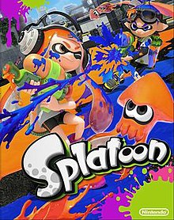
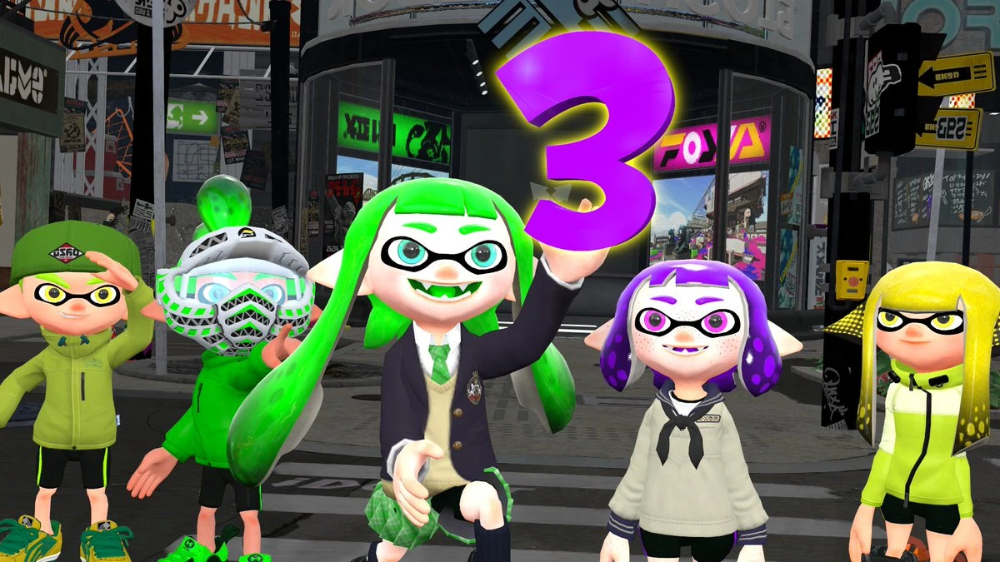
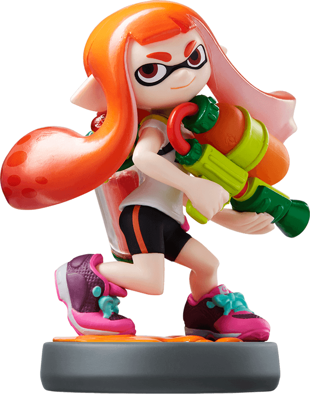

About
Splatoon is a third-person shooter game series created by Hisashi Nogami, who is also known for creating the Animal Crossing series, and Shintaro Sato.It was developed, published, and owned by Nintendo. The first game in the series was first revealed at E3 2014, and later released in late May of 2015. It offers different kinds of things to do. Multiplayer, where you can compete with other players online around the world, a single-player campaign, offering lore within the game universe, among others.
Splatoon 1 had set what was to come for the series in the following years. Some game journal writers say that it was a refreshing change from the usual blood baths asociated with third-person shooter games. Thus, a new and franchise was welcomed in the Nintendo pantheon.
Fandom
Splatoon has welcomed a very creative fan community, which NPR reports "is more welcoming than other shooters in the genre". As such, many videos online feature those with Inkling personas in various skits, story lines, among others. And, every time some new related to Splatoon pops up in Nintendo news, those videos spike in popularity.
Amiibo
Additionally, Splatoon has its own amiibo figures that can be used to unlock special rewards. These figures were released in 2014, and they similarly function like Skylanders, Disney Infinity, and Lego Dimensions' "toys to life" platforms.
